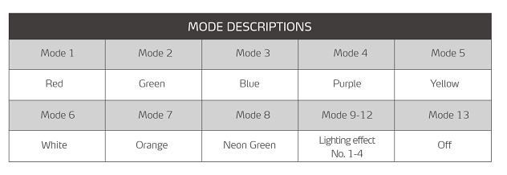

Operation and Issues found Front Panel Operation and Interfaces Icons and ports USB 3.0 x2The USB front panel are connected to the PCIex1 USB card Hybrid Audio PortIs not active, this system does not support Audio LED ButtonFor your entertainment during coding you can switch on the color mode of the 5 ARGB system fans in the enclosure.There are 12 color preset modes and an off mode. Pressing this button cycles you through the preset modes.  Power ButtonSystems are configured for ATX mode operation. See “Power up/down and ACPI behavior” below for particularities booting up and shutting down Rear I/O and Power Supply Power up/down and ACPI behavior Master switch on the power supply Switch on power input to the system on the rear side of the system. This will energize the system but will not let it boot up. ATX mode power on with power button on front panelPower button needs to be pushed for 2 seconds and than released than system will boot up ATX mode power down with power button on front panelPower button needs to be pushed for 2 seconds and than released than system will shutdown power This does not sends a signal to the OS to do an orderly OS shutdown and than OS issue a poweroff !!! Instead pressing this button during operation leads to sudden hard power off Reset or rebootDoes not work at this time. SOC deliver unreliable RESET information so we had to shut it down. There is no hard reset and no soft reset. A soft reset under Linux with command “sudo reboot” leads to a hanging system that can only be recovered by : a hard power down on the switch located on the power supply power back on using the switch located on the power supply press “Power Button” on the front panel for 2 secs and release The edk2 UEFI menu option RESET has the same result. This is a problem if you want to operate the system remotely.In remote case if you do a “sudo reboot” the system will just hang and not do the warm reboot Ampere Altra Turbo modeWe ran into this testing the 32-core. Turbo means 1.7 Ghz, but the current systems are running at 1.5 Ghz Ampere is debugging this, there seems to be a relation to VR power problems on our board that automatically blocks the turbo option from being enabled. This is under study ## Ubuntu installation Systems come standard preinstalled with Ubuntu Server Ubuntu Server 20.04 aarch64 version.Below is the procedure that was followed to get to that installOS installed on SCDP Kraken is off the shelve Ubuntu Server 20.04 aarch64 https://ubuntu.com/download/server/arm Our particular version was Ubuntu Server 20.04.2 aarch64system name : comhpcaltstandard username : adlinkstandard password (root) : adlink123 ### Update and upgrade packages login to fresh installed Ubuntu server and sudo apt updatesudo apt ugrade Than upgrade to kernel to 5.11 (HWE) sudo apt install --install-recommends linux-generic-hwe-20.04 Update Intel 10GbE driversThe Kraken SCDP includes a PCIe x8 Intel X710 Quad 10GbE (10GBASE-T) NIC accessible on the rear of the system. The Ubuntu distribution does not provide Intel’s latest drivers so we update them as below Download the latest driver from Intel’s homepages here : https://intel.com/content/www/us/en/download/18026/intel-network-adapter-driver-for-pcie-40-gigabit-ethernet-network-connections-under-linux.html File name downloaded : i40e-2.16.11.tar.gz size: 630.6 KB tar -zxvf i40e-2.16.11.tar.gzcd i40e-2.16.11.tar.gz/srcmake && sudo make install Reboot During reboot and reading out dmesg we found a lot of PCIe AER messages we think are relate to the Intel LAN drivers. All these errors are on link level, not hardware level, and all errors are corrected. [ 77.119951] pcieport 0000:00:01.0: AER: Corrected error received: 0000:01:00.0[ 77.119973] i40e 0000:01:00.0: PCIe Bus Error: severity=Corrected, type=Data Link Layer, (Transmitter ID)[ 77.119981] i40e 0000:01:00.0: device [8086:1589] error status/mask=00001000/00002000[ 77.119990] i40e 0000:01:00.0: [12] Timeout[ 81.119894] pcieport 0000:00:01.0: AER: Corrected error received: 0000:01:00.0[ 81.119922] i40e 0000:01:00.0: PCIe Bus Error: severity=Corrected, type=Data Link Layer, (Transmitter ID)[ 81.119933] i40e 0000:01:00.0: device [8086:1589] error status/mask=00001000/00002000[ 81.119944] i40e 0000:01:00.0: [12] Timeout We decided to turn AER reporting of as follows sudo vi /etc/default/grub make sure no AER is entered as below : GRUB_CMDLINE_LINUX_DEFAULT="pci=noaer" Than to update grub and initialize file system sudo update-grubsudo update-initramfs -u Reboot Network interface configurationAll interfaces have been setup to get IP numbers from a DHCP server. You can verify the network configuration file as below $ less /etc/netplan/00-installer-config.yaml# This is the network config written for 'Kraken SCDP'network: ethernets:# i210 1GbE enP4p4s0: dhcp4: true# i40e Quad 10GbE enp1s0f0: dhcp4: true enp1s0f1: dhcp4: true enp1s0f2: dhcp4: true enp1s0f3: dhcp4: true version: 2 RTC clock cannot be setThe first 8 systems shipped to ARM internally have this problem.There is a problem with access to the RTC under linux. Only way to get a correct system time is having a connection the the Internet !!In this Ubuntu install we have enabled ntp adlink@comhpcalt:~$ timedatectl Local time: Thu 2021-08-12 07:19:03 UTC Universal time: Thu 2021-08-12 07:19:03 UTC RTC time: Sun 2017-01-01 10:00:00 Time zone: Etc/UTC (UTC, +0000)System clock synchronized: yes NTP service: active RTC in local TZ: no Trying to forcibly update the RTC also leads to an error` adlink@comhpcalt:~$ sudo hwclock --verbosehwclock from util-linux 2.34System Time: 1628752822.679642Trying to open: /dev/rtc0Using the rtc interface to the clock.Assuming hardware clock is kept in UTC time.Waiting for clock tick...ioctl(4, RTC_UIE_ON, 0): Invalid argumentWaiting in loop for time from /dev/rtc0 to changehwclock: Timed out waiting for time change....synchronization failed edk2 update for RTC problemAn update to the edk2 firmware that has the correct RTC code fixes this problem see howto for updating edk2 here